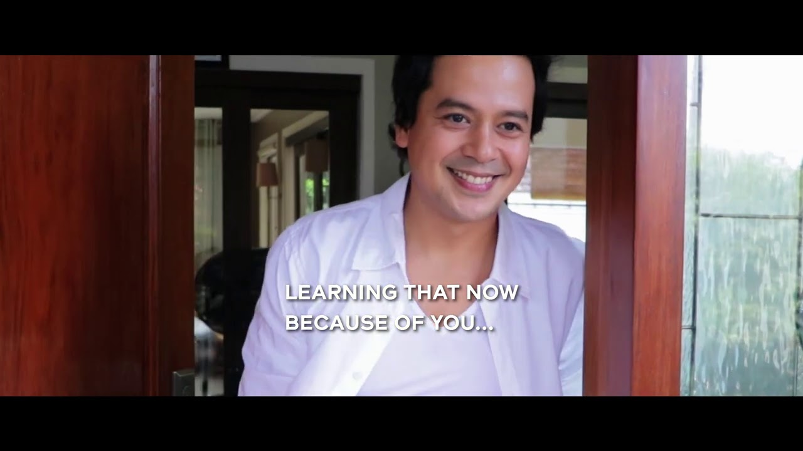

John Lloyd Cruz reunites with director Cathy Garcia Molina in surprise Christmas ad
Posted at Dec 04 2020 07:47 PM
MANILA -- Ahead of their much-awaited movie project, John Lloyd Cruz and director Cathy Garcia Molina reunited for the actor’s Christmas comeback project as an endorser.
The project, shot in out of town locales this year by Molina, was unveiled Friday to the surprise of participants in a virtual media conference.
Cruz’s good looks were back in form in Molina’s shoot that capsulized the actor’s transition as an idol who gave up stardom to become an ordinary citizen and a father within 1,094 days. “37 years to learn how to be human” and “time Is what you make of it” went the blurbs of the ad, which provided a rare peek of Cruz as a father doting on his 2-year-old son.
Molina shared with ABS-CBN News her experience reuniting with Cruz Friday night at the Asian Academy Creative Awards in Singapore where she was nominated as best director (fiction) for her 2019 blockbuster movie, “Hello Love Goodbye.”
“Exciting as always! I missed him," she told ABS-CBN News. “It’s been years since our last film together! And I’m so happy, of course, exchanging ideas with him again! It’s always the best part whenever we work together! Thanks din sa magandang feedback!”
Molina and Cruz have a long string of box-office successes with leading ladies Bea Alonzo and Sarah Geronimo.
Cruz’s audio visual presentation was the culmination of the star-studded virtual media launch that also featured couple Luis Manzano and Jessy Mendiola in an amusing wedding proposal on the beach, Nico Bolzico as Santa Claus, father and daughter Hayden Kho and Scarlet Snow Belo, along with Matteo Guidicelli and other Swatch endorsers.
The Cruz-Molina collaboration is a prelude to a proposed reunion movie with Alonzo under Star Cinema after the pandemic. Also awaited is the release of Cruz’s comeback movie, “Servando Magdamag” directed by Lav Diaz.
Molina had previously told the media that she preferred to handle a Cruz-Alonzo movie with the same passion and intensity, aspects that have been dampened by the pandemic.
“Hindi namin matantiya talaga 'yung pandemya 'di ba? Siyempre may creative process pa 'yan. Inabutan na nang hindi available si Lloydy, may mga prior commitments na siya. So na-put on hold," she told ABS-CBN News in October. "Binigyan ako ng bago (project) na ganun din, laging may problema. Kaya sabi ko baka puwedeng next year na lang. Huwag na nating ipilit kung hindi talaga akma.”
Related Stories